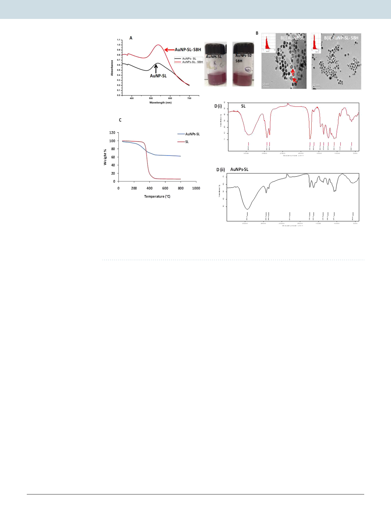

www.nature.com/scientificreports/
www.nature.com/scientificreports
Figure 1. UV-visible spectra of gold nanoparticles synthesized by two different methods as indicated (A)
TEM images of AuNPs-SL synthesized by two different method in absence (B-i) and presence (B-ii) of sodium
borohydride (indicated as SBH) TGA (C) and FTIR spectra of SL (D-i) & AuNPs-SL (D-ii).
Zetasizer and TEM (Fig. 1B-ii) micrograph. A lower PDI is related to the monodispersed colloidal solution. The
zeta measurement value was similar to the earlier one (Supplementary Fig. S1 C,D). For further studies nanopar-
ticles synthesized through subsequent method was used and indicated as AuNPs-SL only.
Capping by SL to AuNPs was also confirmed by thermogravimetric analysis (TGA). Figure 1C indicates two
stage degradation of AuNPs-SL indicating either bilayering of AuNPs by SL or monolayering with some free
SL suspended in solution. TGA graph represents nearly 40% mass loss that includes water molecules and the
organic compound (sophorolipid). The mass loss up to 200 °C is mainly attributed by free water and strongly
bound water29 (nearly 10% mass loss) and afterward due to sophorolipid30 (more than 20%). A similar pattern
of thermal degradation was also observed by Niki et al.,(2013) where they found the multilayer decomposition
of sophorolipids-functionalized iron oxide nanoparticles31. This data also suggest the compact packing of gold
nanoparticles by sophorolipids.
Functional characterization of AuNPs-SL nanoparticles using FTIR indicated that the vibration peaks
AuNPs-SL nanoparticles is almost similar to the sophorolipids [Fig. 1D(i,ii)]. The following important vibra-
tional peaks were of SL aliphatic backbone (n = 2929–2926 & 2866–2856 cm−1), C = O group in carboxylic acid
COOH (n = 1747–1738 cm−1), COH and CO of sophorose moiety (n = 1069, 1024 cm−1) confirming the capping
of AuNPs-SL by sophorolipids. All these details affirm the complexation of sophorolipids to gold nanoparticles
and further matches with earlier findings31,32. Thus, capping of SL to AuNPs was confirmed by FTIR and TGA.
Antimicrobial activity. Agar well diffusion method. The AuNPs-SL was examined against Gram positive S.
aureus and Gram negative V. cholerae by agar well diffusion method for their antibacterial activity. In this method,
a particular volume of inoculum was spread over the agar plate. In which, the required number of holes were
punched using borer for addition of antimicrobial compound and then plates were incubated for certain time
interval. As the antimicrobial compound diffuses into the agar, growth inhibition of microbe is observed33. In this
study, a clear zone of bacterial growth inhibition was observed in wells containing AuNPs-SL for both microbes
after completion of incubation (Table 1). However, SL shows zone of inhibition (15 mm diameter) against gram
positive bacteria S. aureus but not for Gram negative V. cholerae. Interestingly, AuNPs-Sigma did not exhibit any
inhibition with either of microbes.
XTT assay. Antibacterial activity of the AuNPs-SL was further assayed against these microbes by serial
double dilution method to determine the minimal inhibitory concentration (MIC) and viability by XTT [2,
3-bis(2-methoxy-4-nitro-5-sulfophenyl)-2H-tetrazolium-5-carboxanilide sodium salt] assay. McCluskey et al.,
(2005) described the MIC in the XTT assay as the lowest concentration of antimicrobial compound that prevents
Scientific Reports | (2020) 10:1463 | https://doi.org/10.1038/s41598-019-57399-3
3